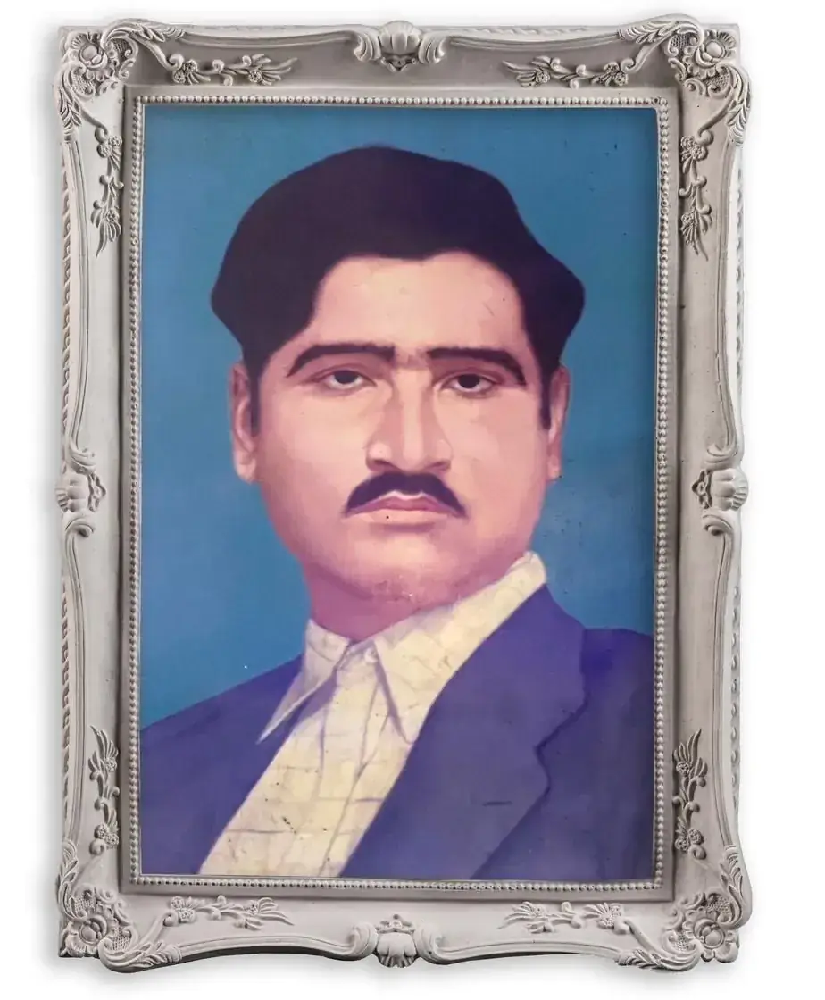

The tea country
Before the brand, there was a river,wide as a sentence no one finishes.Before the river, there was tea,and a translator who knew two languages of trust.
In our family’s account, my great-grandfather, Tej Ram Bawa, left the village of Chogawan, near Amritsar in Punjab, as a teenager and came east to Assam. In Dibrugarh he found work among the tea estates: first in the forest department, then as a translator, standing between the British and the workers. That work introduced him to a Scottish army officer who shared a private enthusiasm for spirits.
In the family’s telling, single malt was an officer’s privilege, so Tej Ram bought it from the British and layered it with local whisky until it suited an Indian table. The family remembers it as ‘Indian blended Scotch’, and it was sold quietly. When the licensing laws changed after Independence, the business had to close its doors. What remained was carried on quietly until government regulation ended it in 1985, and the craft came down to us as a story.
I was born in the same town as my father, and was taught in the same school by many of the same teachers. By my own account, I was the family’s black sheep: restless, searching for something my friends did not seem to need.
A Scotsman taught my great-grandfather how to distil. The bridge always existed; it has only become stronger.To Sky News, July 2025
